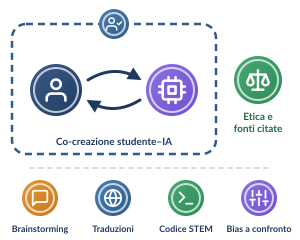

C · Scuola secondaria di secondo grado · 14–18 anni (maggiori di 14 anni)Il compito a casa con l’IA si adatta all’età, alla maturità cognitiva e al profilo giuridico degli studenti.

Alla pari con la macchina: co-creare, verificare, citare
L. 132/2025, art. 4, c. 4
Consenso autonomo dai 14 anni
Chi ha compiuto 14 anni esprime da sé il consenso ai trattamenti di IA, purché le informazioni siano date con linguaggio chiaro e accessibile.
D.M. 166/2025, par. 2 · D.M. 219/2025
Co-creazione avanzata
Co-creazione avanzata, prompt engineering etico e sviluppo del pensiero critico interdisciplinare.
Modalità operativa · D.M. 184/2023
Compiti complessi
L’IA generativa si usa per:
- maieutica algoritmica;
- brainstorming per saggi brevi;
- traduzioni comparative;
- codice e debugging per le STEM;
- confronto dei bias tra modelli diversi.
Obiettivo
Padronanza consapevole
- padronanza consapevole dell’IA;
- trasparenza nella citazione delle fonti;
- etica dell’algoritmo.
In vista della formazione superiore e del mondo del lavoro.